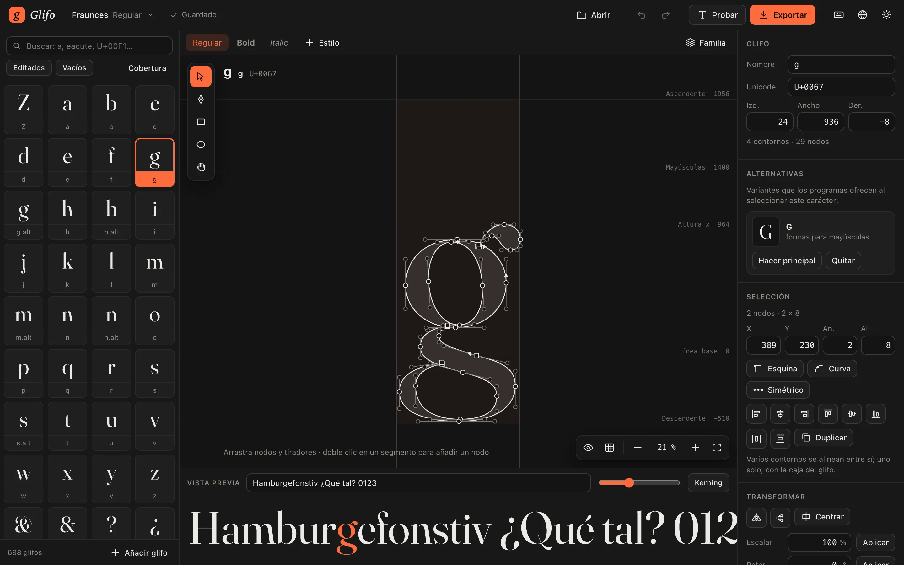
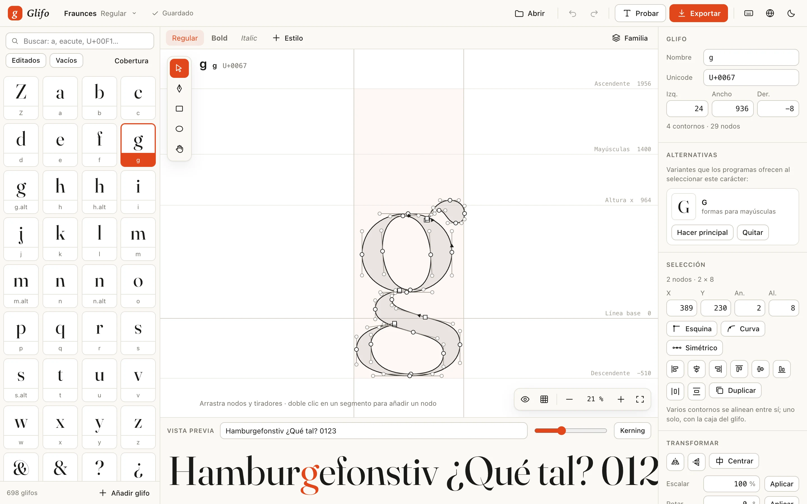
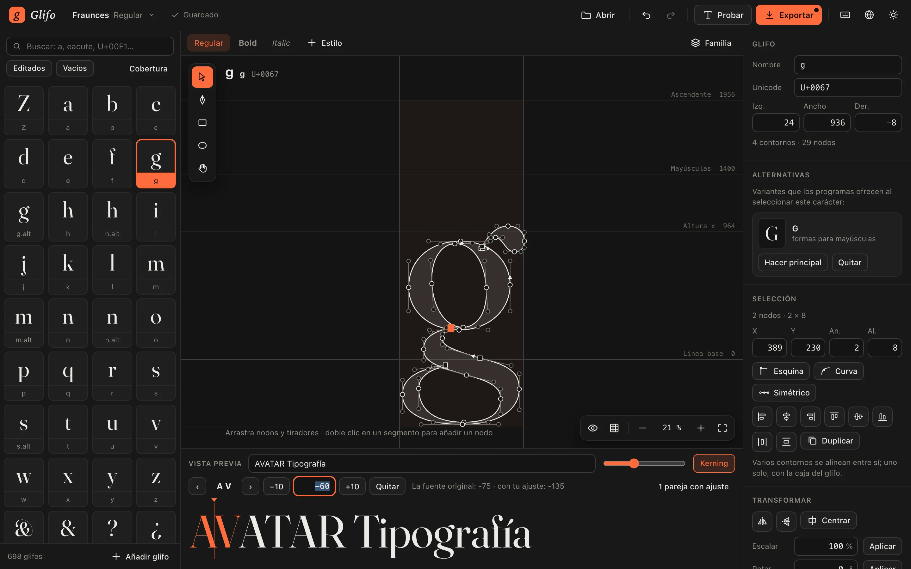
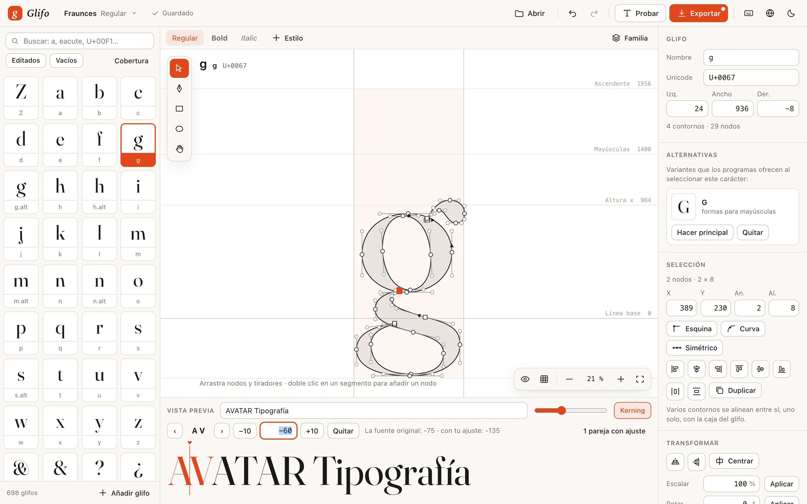
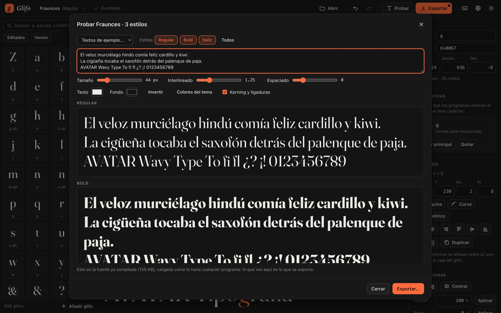
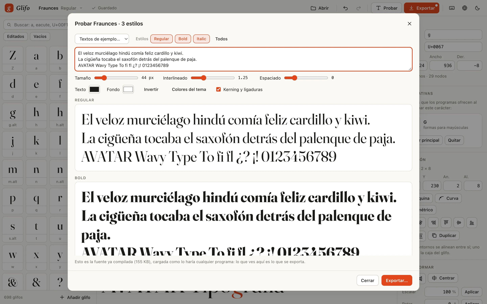
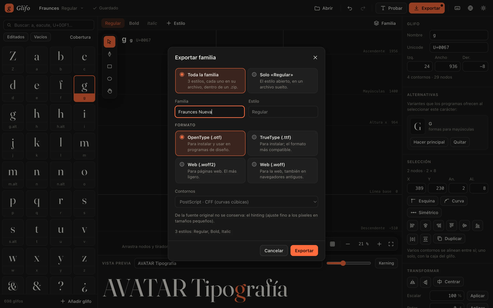
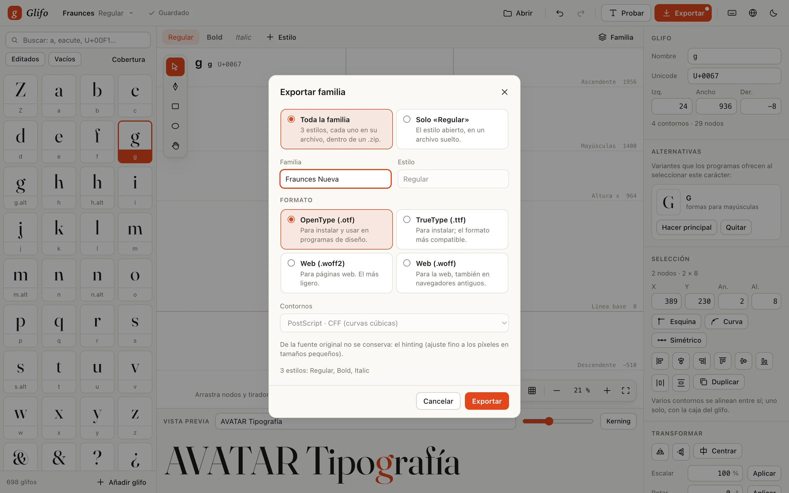

Dibujo vectorial, nodo a nodo
Pluma, rectángulo y elipse; nodos de esquina, de curva y simétricos; tiradores que responden como esperas. Cada paso se puede deshacer y rehacer.
Glifo 1.0 · Editor de tipografías
Un editor de tipografías que vive en tu navegador. Abre una fuente o empieza de cero, dibuja cada letra nodo a nodo, ajusta métricas y kerning, y expórtala lista para instalar o para la web.
Funciones
Todo lo que hace falta para llevar una letra del primer trazo a una fuente que se instala y se usa.
Pluma, rectángulo y elipse; nodos de esquina, de curva y simétricos; tiradores que responden como esperas. Cada paso se puede deshacer y rehacer.
Unión, resta e intersección para construir letras a partir de piezas simples.
Haz clic entre dos letras y ajusta su espacio viendo el resultado. Se exporta dentro de la fuente.
Rejilla configurable y guías inteligentes: lo que mueves encaja con los demás nodos y con las líneas de métricas.
La «á» se compone con la «a» y su acento. Una a una o todas a la vez, con la cobertura del español a la vista.
Cada estilo en su pestaña. Los nuevos nacen de una copia más gruesa, más fina o inclinada de otro.
OTF y TTF para el sistema y los programas de diseño; WOFF2 y WOFF para páginas web. Una familia se exporta entera, en un .zip con un archivo por estilo.
Todo ocurre en tu equipo: los archivos que abres no se envían a ningún servidor. Los proyectos se guardan solos en el navegador.
El editor
Capturas reales de Glifo trabajando con una familia de tres estilos.








Cómo funciona
Arrastra un TTF, un OTF, un WOFF o una colección TTC, o crea una fuente en blanco. Cada fuente es un proyecto que se guarda solo mientras trabajas.
Construye con formas básicas y afina con nodos y tiradores. Guías, rejilla y medidas exactas para la precisión; métricas y kerning para el ritmo.
Compila la fuente y pruébala con tus propios textos. Cuando esté lista, expórtala para instalarla en el sistema o para usarla en la web.
Precios
El editor completo no cuesta nada. Los planes de pago añaden la nube y el trabajo en equipo.
Hoy el editor completo es gratuito. Los planes de pago se activarán junto con las cuentas de usuario; hasta entonces no se cobra nada.
Preguntas
No. Glifo se abre en el navegador y funciona desde el primer momento, sin instalación y sin crear una cuenta.
En tu navegador, solos, poco después de cada cambio. Para tener una copia fuera del navegador o llevar el trabajo a otro equipo, cada proyecto se exporta a un archivo .glifo.
Tuyas. Conservas todos los derechos sobre tus diseños. No se publican ni se usan para entrenar modelos de inteligencia artificial.
Se abren fuentes TTF, OTF, WOFF y colecciones TTC, además de dibujos SVG. Se exporta en OTF y TTF para instalar, y en WOFF2 y WOFF para la web. De una fuente variable se elige una instancia y se trabaja con ella como fuente estática.
Sí, siempre que su licencia lo permita. Al exportar, Glifo conserva lo que no has tocado y avisa de lo que una fuente original trae y no puede mantener, como el ajuste fino a los píxeles.
En español y en inglés. El idioma se cambia desde la barra superior del editor.
Abre el editor y dibuja tu primer glifo. Sin instalar nada y sin crear una cuenta.